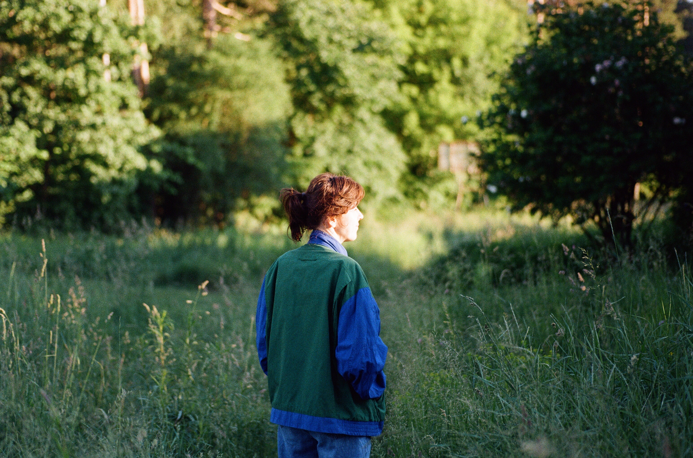
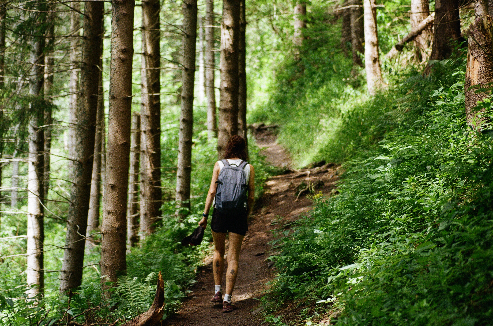
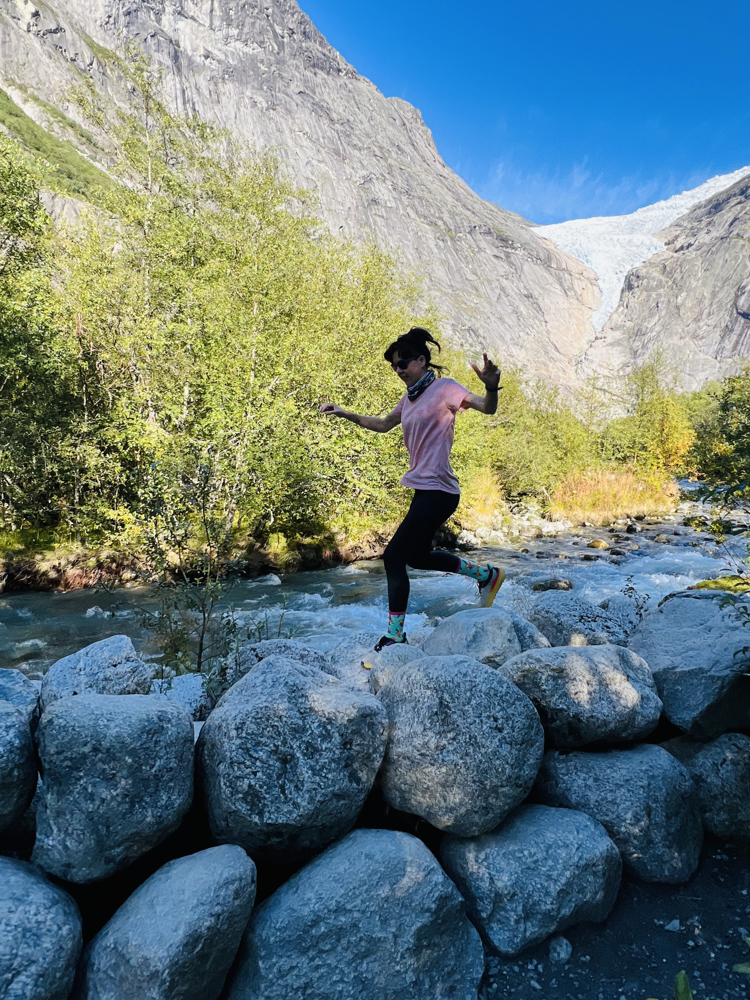

APIE MANE
Esu Inga Kreivėnaitė. Jau pavardėje tarsi užkoduotas nuo ankstyvos paauglystės kirbantis klausimas: ar tiesus kelias visada yra vienintelis? Gana anksti pastebėjau, kad, nepaisant panašių sovietinių daugiabučių, kuriuose augome, ir vienodų mokyklinių uniformų, kurias dėvėjome, tuos pačius kasdienius reginius kiekvienas patiriame ir išgyvename savaip. Troškau geriau pažinti ne tik savo, bet ir kitų minčių sraigtelius – kaip jie sukasi, kodėl kartais stringa, kas kuria įtampą ir ją atpalaiduoja.
Mokiausi klausytis. Ausimis gaudžiau, kaip skamba aplinkinių žodžiai ir kaip jie kuria jaukią, o kartais bauginančią melodiją. Iš to, ką išgirsdavau, gimdavo ilgi dialogai, padovanoję galimybę susitikti su kitu ir pabūti šalia jo pasaulio.
Vėliau žmogiškąją prigimtį tyrinėjau literatūros studijose Vytauto Didžiojo universitete. Mane ypač domino prancūzų egzistencialistai, nardantys po santykio, kūno, laisvės ir atsakomybės, absurdo, prasmės ir beprasmybės temas. Pirmuosius paauglystės suvokimus apie greta egzistuojančias skirtingas tiesas praplėtė siurrealistų idėjos. Jos leido į paraštes patupdyti griežtas nuostatas apie tai, koks žmogus turėtų būti, ir mėginti kuo atviriau susitikti su tuo, kaip jis iš tikrųjų patiria savo gyvenimą.
Savo magistro baigiamajame darbe gilinausi į žaidžiančio žmogaus (homo ludens) ir literatūros santykį. Vis dar tikiu, kad žaidimas – vienas pamatinių žmogaus buvimo būdų, suteikiantis galimybę susitikti su kitu ir kitaip patirti save, rinktis, rizikuoti ir bent trumpam pasinerti į nežinomybę. Gal todėl iki šiol man įdomiausia atsitraukti nuo „taip turi būti" ir smalsiai patyrinėti: o kaip dar galėtų būti?


Pastaruosius trylika metų žmogaus ir jo aplinkos santykis buvo svarbus ir mano profesinėje veikloje. Gilinausi į socialinės atskirties, apleistumo, skurdo, įtraukiojo ir tarpkultūrinio ugdymo temas, vadovavau daugiakultūriam vaikų ir jaunimo centrui „Padėk pritapti". Čia teko telkti komandą, kurti organizacijos strategines kryptis, idėjas paversti projektais ir kasdiene praktika. Bendradarbiavau su švietimo institucijomis, nevyriausybinėmis organizacijomis ir politikos formuotojais, dalyvavau švietimo politikos ir advokacijos procesuose, vedžiau mokymus švietėjams ir socialinės srities specialistams. Ši profesinė patirtis mokė ne tik imtis atsakomybės ir veikti, bet ir klausytis, išgirsti skirtingas pozicijas, suprasti, kas už jų slypi, išsakyti savąją ir ieškoti erdvės susitikimui.
Dirbdama su didelę socialinę atskirtį patiriančia romų bendruomene ir kitomis tautinėmis mažumomis vis aiškiau mačiau, kaip stipriai kiekvieno žmogaus pasaulį formuoja aplinka, kurioje jis auga, ir vertybės, kurias sutinka šeimoje, mokykloje bei visuomenėje. Išmokau jautriau žvelgti į kito žmogaus gyvenimo istoriją, jo mąstymo ir pasaulio suvokimo būdą, o kartu akyliau pastebėti savo pačios išankstines nuostatas.
Po daugelio metų darbo, kuriame greta žmogaus visada buvo ir platesnių sisteminių pokyčių siekis, pajutau norą sulėtėti ir pakeisti žvilgsnio mastelį, atidžiau įsižiūrėti į individualią patirtį ir tai, kas vyksta santykiuose, giliau suprasti žmogaus santykį su savimi, kitais ir pasauliu bei tai, kaip jį veikia aplinka. 2024 metais pradėjau egzistencinės psichoterapijos studijas Humanistinės ir egzistencinės psichoterapijos institute (HEPI), kurias šiuo metu tęsiu pradiniame lygyje. Po metų įstojau į profesionalias supervizijos studijas Vytauto Didžiojo universitete (VDU), rengiančias supervizorius ir profesinių santykių konsultantus.
Šiandien konsultuoju žmones individualiai, taip pat dirbu su komandomis ir organizacijomis. Kartu tyrinėjame, kas vyksta, kur stringama, kas kelia įtampą ir ką būtų galima pamatyti kitaip.
Mano profesinė veikla supervizuojama – darbiniais klausimais nuolat konsultuojuosi su ilgametę patirtį turinčia supervizore, taip pat dalyvauju grupinėse supervizijose. Tikiu, kad kiekvienas turime tai, kas lieka už mūsų pačių matymo lauko, todėl man svarbu ne tik auginti profesines kompetencijas, bet ir asmeninėje psichoterapijoje giliau pažinti savo vidinius procesus.
Po intensyvaus buvimo su kitais geriausiai pailsiu bėgdama gryname ore. Juntu, kaip mintys rimsta, o pasaulis susitraukia iki kvėpavimo, žingsnių ir medžių šaknų po kojomis. Ilguose kilometruose susitinku su savo kūnu, nuovargiu, ribomis, galimybėmis ir nežinomybe. Gal todėl labiausiai traukia takai, kuriais dar nesu bėgusi.

2026 m. – dabar. Egzistencinė terapija, pradinio lygio studijos (Humanistinės ir egzistencinės psichoterapijos institutas).
2025 m. – dabar. Profesionalios supervizijos studijos (Vytauto Didžiojo universitetas).
2024 m. – 2026 m. Egzistencinė terapija, įvado studijos (Humanistinės ir egzistencinės psichoterapijos institutas).
2023 m. Jaunimo darbuotojo sertifikatas (Jaunimo reikalų agentūra).
2021 m. – 2022 m. Ryšių su visuomene ir rinkodaros komunikacijos studijų programa (Lietuvos žurnalistikos centras).
2012 m. – 2013 m. Pedagogikos ir psichologijos kvalifikacijos tobulinimo programa (Vytauto Didžiojo universiteto Švietimo akademija).
2008 m. – 2010 m. Filologijos magistro kvalifikacinis laipsnis, literatūros ir spaudos studijų programa (Vytauto Didžiojo universitetas).
2004 m. – 2008 m. Filologijos bakalauro kvalifikacinis laipsnis, lietuvių filologijos studijų programa (Vytauto Didžiojo universitetas).